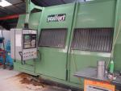
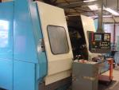
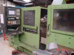
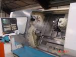

TOURS A COMMANDES NUMERIQUES

2 SCULFORT CN25
- CN : NUM 750T
- 12 postes VDI 60
- Puissance 34 KW
- Diamètre maxi 650
- Diamètre au dessous du trainard 480
- Puissance de la broche 34 KW
- Tourelle 12 postes VDI 60

CHALLENGER 8
- CN : NUM 1060T
- 12 postes VDI 60
- 3 axes
- Entrepointe 2000 mm
- Diamètre au dessous du trainard 480
- Contre poupée équipée d'un mandrin à serrage hydraulique pour récupérer les pièces au tronçonnage
- Tourelle 12 postes VDI 60

INDEX GU1400
- CN : SIEMENS SINUMERIK 840
- 8 postes VDI 40
- Diamètre maxi au dessus du banc 520
- Diamètre au dessus du trainard 450
- Course (axe Z) : 1400
- Axe C et tête de fraisage
- Outils tournants

CHALLENGER 5
- CN : NUM 750T
- 8 postes VDI 40
- Diamètre maxi au dessus du banc 450
- Diamètre au dessus du trainard 380
- Entrepointe 760
EQUIPEMENTS COMPLEMENTAIRES
FRAISEUSE
- STANKO - pour gros travail d'ébauche - course X 1000 Y 400 Z 500
RECTIFIEUSE PLANE
- GER RS - prise de passe et diamantage automatique - course X 1000 Y 500 Z 400
- GER RS - course X 750 Y 350 Z 300
RECTIFIEUSE CYLINDRIQUE
- STANKO - inter/exter - meule diamètre 600 x 80 - course X 250 Y 750
TOUR
- HAULIN - serre pince rapide pour reprise
SCIE AUTOMATIQUE
- course X 460